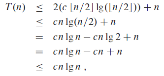
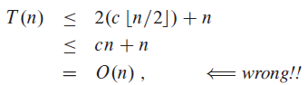

재귀를 풀기 위한 치환법(substitution method) 2단계
1. 답의 형태를 추측하라.2. 상수를 찾기 위해 수학적 귀납법을 사용하고 답이 작동하는 것을 보여라.
재귀에 관한 상계 또는 하계를 만들기 위해 치환법을 사용할 수 있다. 예제로 4.19 재귀식을 한 번 살펴보자.
4.19 재귀식의 답을 T(n) = O(n lg n) 이라고 추측할 수 있다. 그러면 c > 0 인 T(n) ≤ cn lg n 을 증명해야한다. 증명 하기 전에 양수 m에 대하여  라고 가정한다.
라고 가정한다.

앞으로 살펴볼 대부분의 재귀에서, 작은 n에 대하여 귀납적 가정을 편히 쓰려면 경계 조건을 확장해야 한다. 그리고 항상 세부세항을 정확하게 도출하지 않아도 된다.
Making a good guess
재귀의 올바른 답을 추측하는 여러 방법 중, 일반적으로 쓰이는 방법은 없다. 경험과 창조성이 필요하다. 다음 예제를 보자.
이 재귀식은 우변에 있는 '+17' 때문에 어려워 보인다. 그러나  와
와  의 차는 n이 클 경우에 그렇게 크지 않다. 따라서 T(n) = O(n lg n)이라고 추측할 수 있다. (관련 문제 4.3-6)
의 차는 n이 클 경우에 그렇게 크지 않다. 따라서 T(n) = O(n lg n)이라고 추측할 수 있다. (관련 문제 4.3-6)
좋은 추측을 하는 다른 방법은 재귀의 느슨한 범위를 증명하고 불확실한 범위를 줄이는 것이다. 재귀식 4.19의 하계는 T(n) = Ω(n), 상계는 T(n) = O(n²) 이다. 정확하며 점근적으로 딱 맞는 T(n) = Θ(n lg n) 에 도달하기 위해선 점차적으로 상계를 낮추고 하계를 올려야 한다.
subtleties
재귀의 답에 관한 점근적 경계를 올바르게 추측할 수 있지만 계산은 귀납에서 실패할 수도 있다. 그러한 난관에 부딪혔을 때에는 낮은 차수항을 빼서 추측을 수정해야한다. 그러면 계산은 잘 될 것이다.
이 재귀식은 답이 T(n) = O(n) 이라고 추측할 수 있다. 상수 c의 적절한 선택시에 T(n) ≤ cn 임을 보여주는 것을 한 번 시도하겠다. 재귀식에서 이러한 추측을 치환하면 다음과 같다.
이 식은 T(n) ≤ cn 에 맞지 않다. 따라서 더 큰 추측인 T(n) = O(n²) 을 사용할 수도 있다. 그러나 강력한 귀납적 가설을 사용하여 T(n) = O(n) 이 맞다는 것을 보여줄 수 있다. 전에 했던 추측에서 더 낮은 차수항을 빼면 어려움을 극복할 수 있다. 새 추측은 T(n) ≤ cn-d 이다. d ≥ 0 이고 상수이다. 이전과 같이 충분히 큰 상수 c를 선택해야 한다.
Avoding pitfalls
점근적 표기를 사용하다 오류가 나기 쉽다. 재귀식 4.19 에서 T(n) ≤ cn 이라고 추측하여 T(n) = O(n) 으로 잘못 증명할 수도 있다.

이 재귀식은 틀렸다. c가 상수이기 때문이다. 그러므로 귀납 가설 사용시에는 정확한 형태를 도출해야 한다.
Changing variables
생소한 재귀식은 조금의 대수 변경을 통해 이전에 보던 재귀식처럼 만들 수 있다. 다음 예제를 보자.
이 식은 어려워 보이지만 변수 변경으로 단순화시킬 수 있다. 편의를 위해서 √n은 반올림한다.
m = lg n 이라고 놓으면,
새로운 재귀식을 만들기 위해  이라고 하자.
이라고 하자.
이 식의 답은  이다.
이다.
정리
Exercises
4.3-1Show that the solution ofis
.
※ 재귀를 반복해서 푸는 방법도 있지만, 주제에 맞게 치환법을 써서 풀었다.
4.3-2Show that the solution ofis
.
4.3-3We saw that the solution ofis
. Show that the solution of this recurrence is also
. Conclude that the solution is
.
4.3-4Show that by making a different inductive hypothesis, we can overcome the difficulty with the boundary condition T(1) = 1 for recurrence (4.19) without adjusting the boundary conditions for the inductive proof.
추측
증명
대입해보면 주어진 식을 만족한다. 
4.3-5Show that
recurrence (4.3)
추측
증명
4.3-6Show that the solution tois
4.3-7
Using the master method in Section 4.5, you can show that the solution to the recurrence  is
is  . Show that a substitution proof with the assumption
. Show that a substitution proof with the assumption  fails. Then show how to subtract off a lower-order term to make a substitution proof work.
fails. Then show how to subtract off a lower-order term to make a substitution proof work.
4.3-8
Using the master method in Section 4.5, you can show that the solution to the recurrence  is
is  . Show that a substitution proof with the assumption
. Show that a substitution proof with the assumption  fails. Then show how to subtract off a lower-order term to make a substitution proof work.
fails. Then show how to subtract off a lower-order term to make a substitution proof work.
4.3-9Solve the recurrenceby making a change of variables. Your solution should be asymptotically tight. Do not worry about whether values are integral.
재귀나무를 이용해서 풀면  이 나온다.
이 나온다.